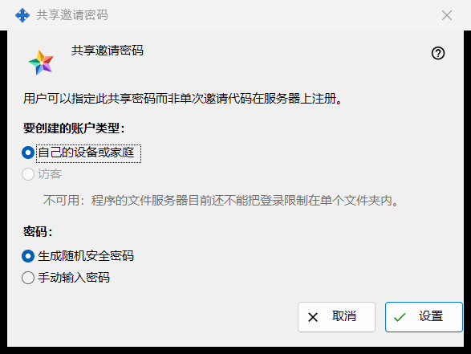
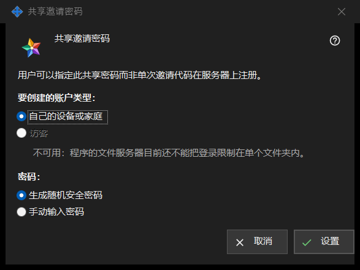

共享邀请密码
用途说明
此窗口让用户可以用一个共享密码在服务器上注册，而不必使用一次性邀请代码。可在交换服务器设置的「邀请」组中勾选「共享邀请密码」打开，或使用旁边的「设置共享密码..」打开。


操作顺序
- 选择账户类型。
- 选择由程序生成密码还是自己输入。
- 点击「设置」。
- 如果密码是生成的，请在只显示一次的窗口中复制它。
- 要停止接受它，请取消勾选「共享邀请密码」并确认。
界面元素
账户类型
「要创建的账户类型：」提供「自己的设备或家庭」和「访客」。「访客」被禁用，其下一行给出原因：程序的文件服务器无法把登录限制在一个文件夹内。如果共享密码已经启用，会预先选中它当前的类型。如果该现有类型是访客，「设置」被禁用；但仍可关闭共享密码。
密码
「密码：」提供「生成随机安全密码」（默认选中）和「手动输入密码」。点击「设置」后，手动输入的密码会在一个检查规则的密码窗口中请求：至少 10 个字符，包含一个大写拉丁字母、一个小写拉丁字母和一个数字。取消该窗口会回到这里。
设置
「设置」把密码和账户类型发送给服务器并启用共享密码；页面显示「共享邀请密码已保存并启用。」，复选框下方的状态行显示「共享密码已启用（账户类型：..）。」生成的密码会在单独的窗口中只显示一次：请在那里复制，之后无法再读取。凡是知道该密码的人都可以注册所选类型的账户，所以只把它交给你想接纳的人。
关闭
取消勾选复选框会询问：「禁用共享邀请密码？将无法再使用它进行新注册。」默认答案是「否」。点击「是」后，页面显示「共享邀请密码已禁用。」，状态行显示「共享密码已禁用。」
取消
「取消」或 Esc 会关闭窗口，不更改任何内容。如果你是通过勾选复选框打开的，复选框会恢复到原来的状态。